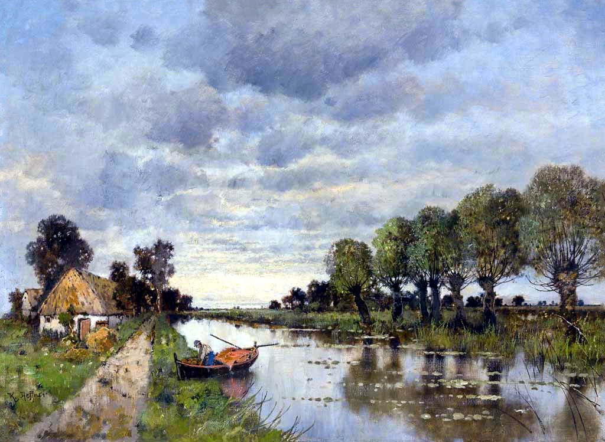
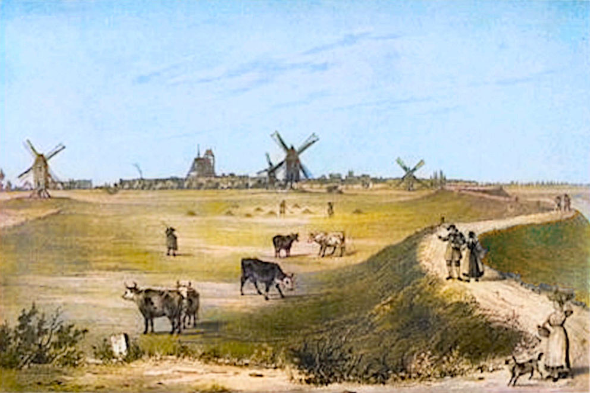

Malerischer Eindruck von der Altmark

Künstlerischer Eindruck von der Altmark
Die Familie Schleßmann Teil 1
Das Leben in Wendemark und Werben
Alles begann in der Mark Brandenburg. Der erste bekannte Vorfahre der Familie Schleßmann ist Peter Schleßmann, der sich um das Jahr 1635 - also mitten im Dreissigjährigen Krieg - in der Mark Brandenburg niederliess, genauer gesagt in der Altmärkischen Wische bei Werben an der Elbe. Nur wenige Jahre zuvor, am 7. August 1631, hatte die bekannte "Schlacht bei Werben" stattgefunden. Gustav Adolph von Schweden kämpfte gegen die Kaiserlichen Truppen unter dem berüchtigten Feldherren Tilly, und die Stadt Werben stand im Mittelpunkt des Gefechts. Die Region hatte zu dieser Zeit bereits schwere Schäden durch den Krieg erlitten und viele Einwohner waren geflohen.Peter Schleßmann wurde etwa um 1610 geboren, aber es ist unklar, woher er kam. Er stammte mit Sicherheit nicht aus Brandenburg, denn der Name war dort gänzlich unbekannt. Es ist sehr wahrscheinlich, dass Peter Soldat in der Armee des Schwedenkönigs war und er aus irgendeinem Grund seine Kompanie verlassen konnte oder musste.
Peter Schleßmann und Anna Meyers
Um das Jahr 1635 heiratete Peter in Werben eine Frau namens Anna Meyers. Er hätte sich keinen schwierigeren Zeitpunkt für die Gründung einer Familie aussuchen können. Die kriegerischen Auseinandersetzungen in der Gegend dauerten noch bis 1641. Während dieser Zeit hielt die Flucht der Einwohner vor den Kriegszuständen weiterhin an und gleichzeitig wütete die Pest in Werben und Umgebung, vor allem 1636 und 1637, was die Bevölkerung weiter dezimierte. Viele Dörfer waren fast menschenleer und meisten Bauernhöfe waren verödet. Es dauerte lange, bis die Region sich wirtschaftlich wieder erholte. Trotz dieser wenig erfreulichen Umstände hatte Peter mit seiner Frau Anna im Laufe der Jahre mindestens neun Kinder.Der Einhof in der altmärkischen Wische
Peter wurde der Besitzer eines uralten Gehöftes bei Wendemark, genannt Einhof oder Wendemark I, nur wenige Kilometer von Werben entfernt. Wendemark war (und ist) ein kleines Dörfchen, das nur aus einer Straße bestand. Als Peter seinen Hof erwarb, war die altmärkische Wische immer noch sehr dünn besiedelt und die wenigen Gehöfte lagen weit voneinander entfernt. Die Gegend ist heute eher monoton, war aber in früheren Zeiten sehr schön. Entlang der Straßen wuchsen riesige Eichen und zwischen den üppigen Weizenfeldern und Kleewiesen waren Hecken als natürliche Begrenzungen. Der Einhof, eine ehemalige Niederungsburg, stand ursprünglich ganz alleine. Erst später kamen weitere Höfe hinzu. Dem Historischen Lexikon für die Altmark ist zu entnehmen, dass der Einhof um das Jahr 1656 ein "Hof mit drei Hufen" war. Eine Hufe ist ein altes Flächenmaß von etwa 20 Hektar. Von einer Hufe konnte eine Familie gut lebten, mit drei war der Besitzer wohlhabend. Die Wiesen, Weiden und Äcker wurden als "vortrefflich" bezeichnet. Besonders der Weizen war von ausgezeichneter Qualität und wurde vor allem nach Hamburg verkauft.
Der Einhof in Wendemark

Gemeinde Wendemark, Engelshof links, Einhof unten Mitte, Werben rechts
» Peter Schleßmann (1610–1680)
heiratete Anna Meyers (1613–1671) in Werben 1635
heiratete Anna Meyers (1613–1671) in Werben 1635
und sie hatten die folgenden Kinder:
| Mette Schleßmann | Lebensdaten | unbekannt | ||
| Breke Schleßmann | Lebensdaten | unbekannt | ||
| Adelheid Schleßmann | Lebensdaten | unbekannt | ||
| Heinrich Schleßmann | Lebensdaten | unbekannt | ||
| Anna Schleßmann | Lebensdaten | unbekannt | ||
| Elisabeth Schleßmann | geb. 1635 *Wendemark |
†Datum unbekannt |
||
| Markus Schleßmann | geb. 1642 *Wendemark |
†Datum unbekannt |
||
| Jacob Schleßmann I | Datum unbek. – *Wendemark |
11.12.1713 †Werben |
h. Margarete Riepert in Werben, 01.11.1671 | |
| Katharina Schleßmann | geb. 1650 *Wendemark |
†Datum unbekannt |
h. Jochim Schröder in Stendal, 04.07.1671 |

Werben um 1644

Werben
Peter Schleßmann starb vermutlich um 1680, denn Dorothea Neumann heiratete nach seinem Tod noch einmal in der Stadtkirche Havelberg. "10.08.1681 Meister Hans Biselstein, Bürger u. Hutmacher allhier mit Dorothea Neumann, Witwe des Peter Schleßmann, Ackermann Wendemark" heisst es in dem Heiratseintrag.
Peters Sohn Markus, geboren 1642, übernahm den Einhof. Den Namen seiner Frau kennen wir nicht, aber er hatte neun oder zehn Kinder, deren Namen und ungefähre Geburtsdaten bekannt sind, aber keine Sterbedaten. Im Jahre 1721 ging der Einhof in den Besitz von Joachim Falcke über.
Die Tochter Katharina heiratete am 4. Juli 1671 in Stendal einen Jochim Schröder, mit dem sie mehrere Kinder hatte. Über den Verbleib der anderen Geschwister wissen wir nichts.
Jacob Schleßmann I und Margarete Riepert

Das alte Rathaus, Werben
Am 1. November 1671 heiratete er Margarete Riepert, die Tochter des Landsassen Heinrich Riepert zu Wendemark. Ihr gehörte die Hälfte des Rittergutes Wendemark II, genannt Engelshof. Die andere Hälfte gehörte ihrem Bruder Heidenreich Riepert.
Jacob Schleßmann wurde 1708 der Wirt des Ratskellers in Werben. Er starb am 11. Dezember 1713 in Werben und seine Frau am 18. September 1720. Ihr Sterbeeintrag lautet:
"Frau Margarete Riepert, seel. Herrn Jacob Schleßmannes nachgelassene Witwe, starb den 18. September und war den 21. des abends in der Stille in der Kirchen beygesetzet, nachdem sie vorher mit 3 Pulsen mit dem großen Geläute überläutet worden war".

» Jacob Schleßmann I (1646–1713)
heiratete Margarete Riepert (1650–1720) in Werben 01.11.1671
heiratete Margarete Riepert (1650–1720) in Werben 01.11.1671
und sie hatten die folgenden Kinder::
| Jacob Schleßmann II | 1672 – *Werben |
12.03.1737 †Werben |
h. Margarete Müller in Werben 08.11.1711 |
Jacob Schleßmann II und Margarete Müller

Die alte Schule, Werben
Der 8. November 1711 war nicht nur der Hochzeitstag von Jacob und Margarete, sondern auch der Tag der Uraufführung von Georg Philipp Telemanns Cantata "Gebet dem Kaiser was des Kaisers ist".
Im Heiratseintrag heisst es:
"Herr Jacob Schleßmann, Bürger und Kornhändler allhier, Herrn Jacob Schleßmann's Bürgers und Königlichen privilegierten Gastwirts hierselbst ehelichen Sohn und Jungfrau Margarete Müllers, Herrn Georg Christoph Müllers, Rektor der hiesigen Schulen hinterlassene jüngste Tochter, am 23. trin. prima vice, am Tage Catharinen vertrauet".
Es sind nur zwei Kinder von Jacob und Margarete namentlich bekannt: Joachim Heinrich und Johann Christoph, aber es gab definitiv noch mehr, denn es existiert eine Gerichtsakte beim Altmärkischen Obergericht zu Stendal "Jacob Schleszmanns Kinder gegen die von Putlitz in puncto Afterlehen zu Losenrade" aus dem Jahre 1756. Losenrade ist in der Nähe von Seehausen, etwa 25 km von Werben entfernt.
» Jacob Schleßmann II (1672–1737)
heiratete Margarete Müller (1686–1733) in Werben 08.11.1711
Jacob Schleßmann war Bierbrauer, Ratskellerwirt, Kornhändler, Kirchenvorsteher und 3. Lehrer an der Knabenschule. Als Kirchenvorsteher war er für die Rechnungsbücher der Kirche verantwortlich; alle Einnahmen und Ausgaben wurden von ihm aufgezeichnet, "in vorbildlicher Weise und mit schwungvoller Schrift", wie es sein Nachfahre Christian Schleßmann beschrieb.
Seine Tätigkeit als Lehrer begann er im Jahre 1736, als er schon über 50 Jahre alt war. Er übte diese Tätigkeit allerdings nicht sehr lange aus, denn er starb bereits im folgenden Jahr, sehr zum Bedauern der Schulleitung.
heiratete Margarete Müller (1686–1733) in Werben 08.11.1711
und sie hatten die folgenden Kinder::
| Joachim Heinrich Schleßmann | geb. 1713 – *Werben |
†Datum unbekannt |
||
| Johann Christoph Schleßmann | 28.11.1721 – *Werben |
†verschollen |
h. Louisa Carolina Kirsch in Neunkirchen 29.09.1757 |

1736 Schleßmann Lehrer an Schule Altmark Jahresberichte Seite 79

1737 Jacob Schleßmann Lehrer
Jacobs Frau Margarete starb am 26. Mai 1733. Im Kirchenbuch steht:
"Frau Margarete Müllerin, Herrn Jacob Schleßmanns, Kirchenvorstehers und Gastwirts Ehefrau, ward mit großem Geläute in 3 Pulsen am 3. Pfingst Feiertage des abends in der Stille begraben."
Jacob Schleßmann überlebte seine Frau nur um fünf Jahre. Er starb am 12. März 1737.
"Herr Jacob Schleßmann, vieljähriger Kirchenvorsteher, gewesener Gastwirt und zuletzt tertius. collega scholae huius, ward den 12. Marty nach vorgängigem großen Geläute in 3 Pulsen, des abends mit einer parentation begraben."
Eine Parentation ist eine Leichenpredigt, also eine Trauerrede. Johann Christoph, der 1721 geborene Sohn von Jacob und Margarete, war beim Tod seines Vaters erst 16 Jahre alt. Wir wissen, dass er das Schreinerhandwerk erlernte, aber nicht wann und wo.
Johann Christoph Schleßmann verliess als junger Mann seine brandenburgische Heimat und ging zuerst nach Holland, wo er in einem Hotel arbeitete. Um das Jahr 1753 kam er nach Neunkirchen im damaligen Fürstentum Nassau-Saarbrücken. Was er dort tat und wie die Geschichte unserer Familie weitergeht steht hier:
» Zu Teil 2 Christoph und Louisa Schleßmann
Teil 1 Peter und Anna Schleßmann
» Teil 2 Christoph und Louisa Schleßmann
» Teil 3 Peter und Philippina Schleßmann
» Teil 4 Karl und Maria Schleßmann
Kontakt
Friederike Schneider (geb. Schleßmann)basehubb @ gmail.com